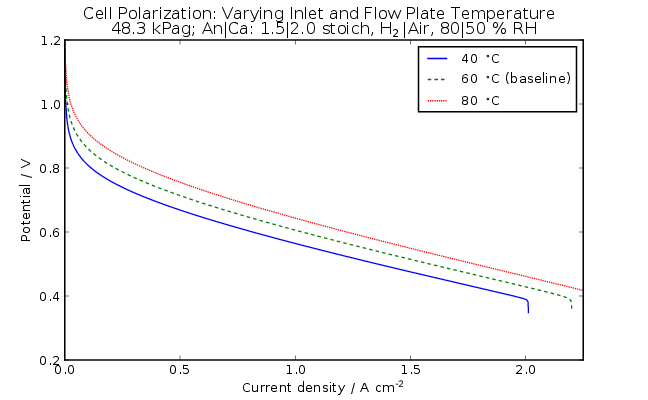

Table of Contents
- User's Guide
- Blocks
- Conditions
- Assemblies
- Regions
- Subregions
- Phases
- Species
- Chemistry
- Connectors
- Characteristics
- Units
- Quantities
- Utilities
- Icons
Download
- Latest: v0.2.4 (2014-01-22)
 FCSys.UsersGuide
FCSys.UsersGuide
Extends from Modelica.Icons.Information (Icon for general information packages).
Package Content
| Name | Description |
|---|---|
| Getting started | |
| Sample results | |
| Glossary | |
| References | References |
| Contact | |
| License |
FCSys.UsersGuide.GettingStarted

| Note |
FCSys should be compatible with any
modeling environment that supports Modelica Standard Library 3.2.1. The following tools have been tested:
|
These are the suggested steps to begin using FCSys:
- Read the overview in the top-level documentation.
- Browse the subpackages of FCSys. In general, the subpackages are ordered with high-level models at the top and basic classes at the bottom.
- Call FCSys.Units.setup() to establish the display units. This is automatic if FCSys is loaded via the load.mos script.
- Simulate the FCSys.Assemblies.Cells.Examples.TestStand model. There are scripts in Resources/Scripts/Dymola/ to create useful plots of that model and others. The scripts should be accessible from the "Command" menu of the Modelica development environment. For more detailed analysis, a Python module called FCRes is available in Resources/Source/Python/ (HTML and PDF documentation here and here).
- Read the documentation of the classes. In particular, these may be of interest:
- FCSys.Units package: Information about the system of units, which is different than Modelica.SIunits
- FCSys.Connectors package: Overview of the connectors
- FCSys.Species.Species model: Details about the storage and transfer of material, momentum, and energy
- FCSys.Regions.AnFPs.AnFP model: Information about the geometric orientation of the cell
- Create and simulate examples of other applications and scenarios. Many of the
submodels (regions, subregions, species) are replaceable.
Their parameters are often not propagated to the cell level, but may
be edited via the parameter dialog by accessing the submodel. Note that
many models have auxiliary output variables for analysis and diagnostics.
These may be included by setting
analysis=truein the outer environment model (instance of Environment). - Develop your own classes. It should be possible to model other fluidic or electrochemical devices (solid oxide fuel cells, lithium ion batteries, flow batteries/regenerative fuel cells, etc.) by extending the existing classes and following the existing framework. It will be necessary to add species models (Li+, O2-, etc.).
- Please share your additions or modifications to the source code so that the library can be improved and others may benefit. The best way is to create a fork from the development page at https://github.com/kdavies4/FCSys. Please also use the contact information.
FCSys.UsersGuide.SampleResults
The figures below show the results from several cell-level examples of FCSys. The models were simulated using Dymola 2014. The plots were generated using ModelicaRes. For more information, please follow the links to the associated models. For discussion and more results, please see [Davies, 2014].

Figure 1: Polarization curves of the cell with various inlet and flow plate temperatures
(FCSys.Assemblies.Cells.Examples.TestStand).

Figure 2: Polarization curves of the cell with various outlet pressures
(FCSys.Assemblies.Cells.Examples.TestStand).

Figure 3: Potential losses during the baseline polarization test
(FCSys.Assemblies.Cells.Examples.TestStand).

Figure 4: Temperature throughout the cell during the baseline polarization test
(FCSys.Assemblies.Cells.Examples.TestStand).

Figure 5: Oxygen pressure during the baseline polarization test
(FCSys.Assemblies.Cells.Examples.TestStand).

Figure 6: Energy balance of a 50 cm2 cell at 1.5 A/cm2 during the baseline polarization test
(FCSys.Assemblies.Cells.Examples.TestStand).

Figure 7: Polarization of cell segments with fixed reactant flow rates
(FCSys.Assemblies.Cells.Examples.TestStandFixedFlowSegmented).

Figure 8: Polarization under sinusoidal, reversing load
(FCSys.Assemblies.Cells.Examples.TestStandCycle).

Figure 9: Liquid pore saturation under sinusoidal, reversing load
(FCSys.Assemblies.Cells.Examples.TestStandCycle).
FCSys.UsersGuide.Contact
Updates to this library (FCSys) may be available online at the main project site or the Modelica libraries page. The development page is https://github.com/kdavies4/FCSys. Please report any problems using the issues link on that page.
- Author:
- Kevin Davies
- Hawaii Natural Energy Institute
- University of Hawaii
- 1680 East-West Rd., POST 109
- Honolulu, HI 96822
- USA
- email: kdavies4@gmail.com
Acknowledgments:
- Technical discussions and insight from Mike Angelo, Guido Bender, Chris Ford, Tom Fuller, Comas Haynes, Sebastian Herzig, Sheldon Jeter, Ben Lee, Robert Moore, George Nelson, Chris Paredis, Mike Tiller, Hubertus Tummescheit, and Mebs Virji
- Source-code contributions and bug fixes from Kevin Bandy, Martin Sjölund, and Joerg Weiss-Ungethüm
- Review and feedback from Mohammad Ali, Severine Busquet, Francois Steinmetz, and Dietmar Winkler
- Financial support from:
- Presidential Fellowship from the George W. Woodruff School of Mechanical Engineering and the Georgia Institute of Technology
- Robert G. Shackelford Fellowship from the Georgia Tech Research Institute
- Grant #N00014-04-0682 from the Office of Naval Research
 FCSys.UsersGuide.License
FCSys.UsersGuide.License
All files in this directory (FCSys) and all subdirectories are licensed by the Hawaii Natural Energy Institute under the Modelica License 2 with the additional condition:
- This software is controlled under the jurisdiction of the United States Department of Commerce and subject to Export Administration Regulations. By downloading or using the Software, you are agreeing to comply with U. S. export controls. Diversion contrary to law is prohibited. The software cannot be exported or reexported to sanctioned countries that are controlled for Anti-Terrorism (15 CFR Part 738 Supplement 1) or to denied parties, http://www.bis.doc.gov/index.php/policy-guidance/lists-of-parties-of-concern. EAR99 items cannot be exported or reexported to Iraq for a military purpose or to a military end-user (15 CFR Part 746.3). Export and reexport include any release of technology to a foreign national within the United States. Technology is released for export when it is available to foreign nationals for visual inspection, when technology is exchanged orally or when technology is made available by practice or application under the guidance of persons with knowledge of the technology.
Copyright 2007–2014, Hawaii Natural Energy Institute and Georgia Tech Research Corporation
The Modelica License 2
Preamble. The goal of this license is that Modelica related model libraries, software, images, documents, data files etc. can be used freely in the original or a modified form, in open source and in commercial environments (as long as the license conditions below are fulfilled, in particular sections 2c) and 2d). The Original Work is provided free of charge and the use is completely at your own risk. Developers of free Modelica packages are encouraged to utilize this license for their work.
The Modelica License applies to any Original Work that contains the following licensing notice adjacent to the copyright notice(s) for this Original Work:
Licensed by the Hawaii Natural Energy Institute under the Modelica License 2
1. Definitions.
- “License” is this Modelica License.
- “Original Work” is any work of authorship, including software, images, documents, data files, that contains the above licensing notice or that is packed together with a licensing notice referencing it.
- “Licensor” is the provider of the Original Work who has placed this licensing notice adjacent to the copyright notice(s) for the Original Work. The Original Work is either directly provided by the owner of the Original Work, or by a licensee of the owner.
- “Derivative Work” is any modification of the Original
Work which represents, as a whole, an original work of authorship.
For the matter of clarity and as examples:
- Derivative Work shall not include work that remains separable from the Original Work, as well as merely extracting a part of the Original Work without modifying it.
- Derivative Work shall not include (a) fixing of errors and/or (b) adding vendor-specific Modelica annotations and/or (c) using a subset of the classes of a Modelica package, and/or (d) using a different representation, e.g., a binary representation.
- Derivative Work shall include classes that are copied from the Original Work where declarations, equations or the documentation are modified.
- Derivative Work shall include executables to simulate the models that are generated by a Modelica translator based on the Original Work (of a Modelica package).
- “Modified Work” is any modification of the Original Work with the following exceptions: (a) fixing of errors and/or (b) adding vendor-specific Modelica annotations and/or (c) using a subset of the classes of a Modelica package, and/or (d) using a different representation, e.g., a binary representation.
- "Source Code" means the preferred form of the Original Work for making modifications to it and all available documentation describing how to modify the Original Work.
- “You” means an individual or a legal entity exercising rights under, and complying with all of the terms of, this License.
- “Modelica package” means any Modelica library that is
defined with the “
package <Name> … end <Name>;” Modelica language element.
2. Grant of Copyright License. Licensor grants You a worldwide, royalty-free, non-exclusive, sublicensable license, for the duration of the copyright, to do the following:
To reproduce the Original Work in copies, either alone or as part of a collection.
To create Derivative Works according to Section 1d) of this License.
To distribute or communicate to the public copies of the Original Work or a Derivative Work under this License. No fee, neither as a copyright-license fee, nor as a selling fee for the copy as such may be charged under this License. Furthermore, a verbatim copy of this License must be included in any copy of the Original Work or a Derivative Work under this License.
For the matter of clarity, it is permitted A) to distribute or communicate such copies as part of a (possible commercial) collection where other parts are provided under different licenses and a license fee is charged for the other parts only and B) to charge for mere printing and shipping costs.To distribute or communicate to the public copies of a Derivative Work, alternatively to Section 2c), under any other license of your choice, especially also under a license for commercial/proprietary software, as long as You comply with Sections 3, 4 and 8 below.
For the matter of clarity, no restrictions regarding fees, either as to a copyright-license fee or as to a selling fee for the copy as such apply.To perform the Original Work publicly.
To display the Original Work publicly.
3. Acceptance. Any use of the Original Work or a Derivative Work, or any action according to either Section 2a) to 2f) above constitutes Your acceptance of this License.
4. Designation of Derivative Works and of Modified Works. The identifying designation of Derivative Work and of Modified Work must be different to the corresponding identifying designation of the Original Work. This means especially that the (root-level) name of a Modelica package under this license must be changed if the package is modified (besides fixing of errors, adding vendor-specific Modelica annotations, using a subset of the classes of a Modelica package, or using another representation, e.g. a binary representation).
5. Grant of Patent License. Licensor grants You a worldwide, royalty-free, non-exclusive, sublicensable license, under patent claims owned by the Licensor or licensed to the Licensor by the owners of the Original Work that are embodied in the Original Work as furnished by the Licensor, for the duration of the patents, to make, use, sell, offer for sale, have made, and import the Original Work and Derivative Works under the conditions as given in Section 2. For the matter of clarity, the license regarding Derivative Works covers patent claims to the extent as they are embodied in the Original Work only.
6. Provision of Source Code. Licensor agrees to provide
You with a copy of the Source Code of the Original Work but reserves
the right to decide freely on the manner of how the Original Work is
provided.
For the matter of clarity, Licensor might provide only a binary
representation of the Original Work. In that case, You may (a) either
reproduce the Source Code from the binary representation if this is
possible (e.g., by performing a copy of an encrypted Modelica
package, if encryption allows the copy operation) or (b) request the
Source Code from the Licensor who will provide it to You.
7. Exclusions from License Grant. Neither the names of
Licensor, nor the names of any contributors to the Original Work, nor
any of their trademarks or service marks, may be used to endorse or
promote products derived from this Original Work without express
prior permission of the Licensor. Except as otherwise expressly
stated in this License and in particular in Sections 2 and 5, nothing
in this License grants any license to Licensor’s trademarks,
copyrights, patents, trade secrets or any other intellectual
property, and no patent license is granted to make, use, sell, offer
for sale, have made, or import embodiments of any patent claims.
No license is granted to the trademarks of
Licensor even if such trademarks are included in the Original Work,
except as expressly stated in this License. Nothing in this License
shall be interpreted to prohibit Licensor from licensing under terms
different from this License any Original Work that Licensor otherwise
would have a right to license.
8. Attribution Rights. You must retain in the Source
Code of the Original Work and of any Derivative Works that You
create, all author, copyright, patent, or trademark notices, as well
as any descriptive text identified therein as an "Attribution
Notice". The same applies to the licensing notice of this
License in the Original Work. For the matter of clarity, “author
notice” means the notice that identifies the original
author(s).
You must cause the Source Code for any Derivative
Works that You create to carry a prominent Attribution Notice
reasonably calculated to inform recipients that You have modified the
Original Work.
In case the Original Work or Derivative Work is not provided in
Source Code, the Attribution Notices shall be appropriately
displayed, e.g., in the documentation of the Derivative Work.
9. Disclaimer
of Warranty.
The Original Work is provided under this
License on an "as is" basis and without warranty, either
express or implied, including, without limitation, the warranties of
non-infringement, merchantability or fitness for a particular
purpose. The entire risk as to the quality of the Original Work is
with You. This disclaimer of warranty constitutes an
essential part of this License. No license to the Original Work is
granted by this License except under this disclaimer.
10. Limitation of Liability. Under no circumstances and under no legal theory, whether in tort (including negligence), contract, or otherwise, shall the Licensor, the owner or a licensee of the Original Work be liable to anyone for any direct, indirect, general, special, incidental, or consequential damages of any character arising as a result of this License or the use of the Original Work including, without limitation, damages for loss of goodwill, work stoppage, computer failure or malfunction, or any and all other commercial damages or losses. This limitation of liability shall not apply to the extent applicable law prohibits such limitation.
11. Termination. This License conditions your rights to undertake the activities listed in Section 2 and 5, including your right to create Derivative Works based upon the Original Work, and doing so without observing these terms and conditions is prohibited by copyright law and international treaty. Nothing in this License is intended to affect copyright exceptions and limitations. This License shall terminate immediately and You may no longer exercise any of the rights granted to You by this License upon your failure to observe the conditions of this license.
12. Termination for Patent Action. This License shall terminate automatically and You may no longer exercise any of the rights granted to You by this License as of the date You commence an action, including a cross-claim or counterclaim, against Licensor, any owners of the Original Work or any licensee alleging that the Original Work infringes a patent. This termination provision shall not apply for an action alleging patent infringement through combinations of the Original Work under combination with other software or hardware.
13. Jurisdiction. Any action or suit relating to this License may be brought only in the courts of a jurisdiction wherein the Licensor resides and under the laws of that jurisdiction excluding its conflict-of-law provisions. The application of the United Nations Convention on Contracts for the International Sale of Goods is expressly excluded. Any use of the Original Work outside the scope of this License or after its termination shall be subject to the requirements and penalties of copyright or patent law in the appropriate jurisdiction. This section shall survive the termination of this License.
14. Attorneys’ Fees. In any action to enforce the terms of this License or seeking damages relating thereto, the prevailing party shall be entitled to recover its costs and expenses, including, without limitation, reasonable attorneys' fees and costs incurred in connection with such action, including any appeal of such action. This section shall survive the termination of this License.
15. Miscellaneous.
- If any provision of this License is held to be unenforceable, such provision shall be reformed only to the extent necessary to make it enforceable.
- No verbal ancillary agreements have been made. Changes and additions to this License must appear in writing to be valid. This also applies to changing the clause pertaining to written form.
- You may use the Original Work in all ways not otherwise restricted or conditioned by this License or by law, and Licensor promises not to interfere with or be responsible for such uses by You.